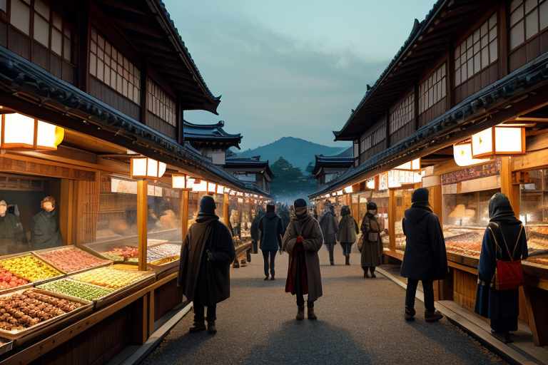
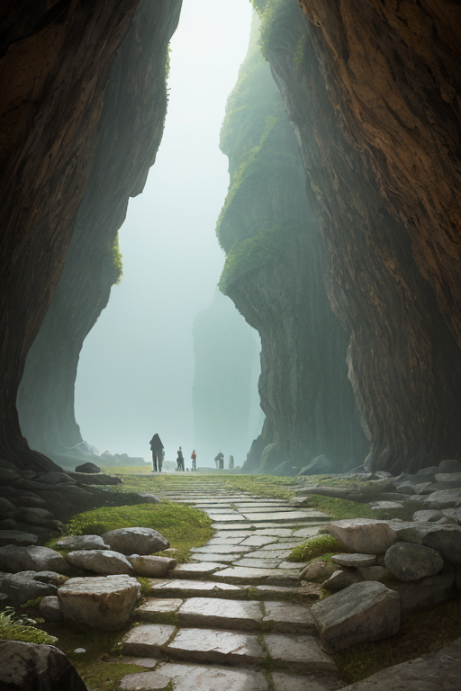
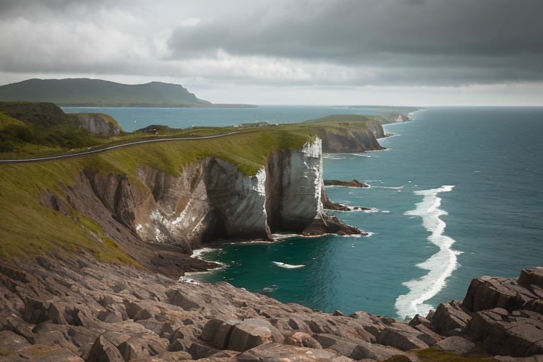
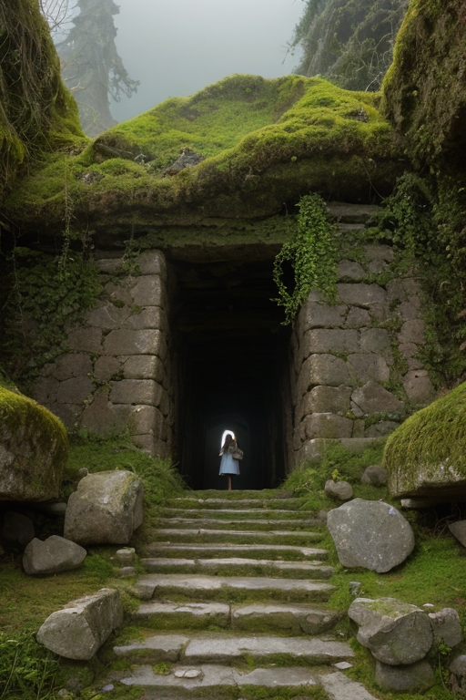
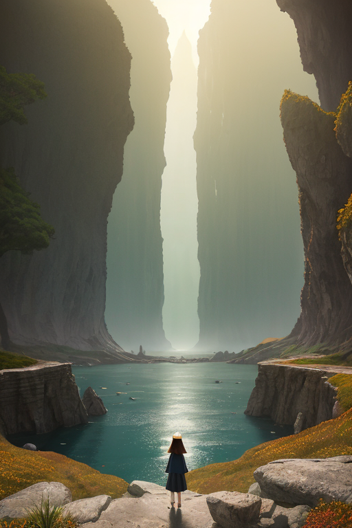

第一章 現実の福井
あなたはまだ気づいていない。この土地にも、王がいることを。
越前かにの甲羅が山と積まれる市場は、冬の朝から活気に満ちていた。商人たちの威勢のいい掛け声、客の値切る声、氷を割る音。金の流れは、この土地の鼓動のように確かで、速い。その喧噪のすぐ傍らで、永平寺の僧が静かに托鉢に立つ。彼は動かず、ただ受け取る。その姿は、賑わう人波の中にあって、一枚の古い岩のようだった。
フクイア・ストラタは、その僧の影に重なるように立っていた。王の目には、この活気の下にある地層が見える。何百万年もかけて堆積した古層の上に、瞬く間に流れる欲望と富。彼は、この二つの「層」の間に生じる微かな歪みを感じ取る。活発な経済活動は地盤に振動を与え、それは時に、深い古層の記憶を揺さぶる。彼の傍らには、地層の精ストラリスが佇み、無言で地中の圧力を計測していた。
「土台は揺るがない」と王は呟く。しかし、その土台の上を走る熱量は、時に予測不能な亀裂を生む。市場の笑顔の下で、彼は次の調整のタイミングを静かに待った。

第二章 歪みの兆候
東尋坊の荒波が岩肌を砕く音は、福井市の活気ある商店街の喧騒と、奇妙な同調を見せていた。観光客と買い物客が行き交う人波。その足元の深く、ジュラミアが守る古層は、長い年月をかけて固められた沈黙を保っている。しかし、王フクイア・ストラタは、その静かな基盤の上に、新たな「層」が急速に堆積しているのを感じていた。それは、SNSで拡散される観光地の賑わいであり、深夜まで稼働する工場の振動であり、物流の巨大な流れだった。
「土台は揺るがない」
彼は再びそう言い聞かせた。だが、ストラリスが示す地中の圧力データには、ごく僅かながら、均質でない数値が散見される。永平寺の森の静寂と、恐竜博物館前の駐車場の混雑。同じ県内に共存するこの二つの時間の流速の差が、目に見えない地盤の「ねじれ」を生み始めていた。彼は、一乗谷朝倉氏遺跡の石段に立ち、かつて栄華を極め、そして土に還った町の記憶に耳を澄ませる。古さは土台である。だが、その上に築かれる現代の速度は、時に土台そのものを忘れさせ、歪みの原因となる。

第三章 王の葛藤
東尋坊の荒波が、黒い岩肌を洗う音は、絶え間ない欲望のざわめきに似ていた。観光バスが次々と到着し、土産物屋の呼び込みが活気を帯びる。ここには、人を呼び、金を落とさせようとする、商都線特有の強い引力が働いている。フクイア・ストラタは、その喧噪の真ん中で、足元の地層を感じ取っていた。人々の活気は確かにこの土地を豊かにする。しかし、その足掻きが、古くから安定していた地層のバランスを、ごくわずか、確かに乱し始めていた。
「商いの熱は、地中の熱と同調しやすい。膨張を招きます」
ストラリスの報告は、常に事実を淡々と伝える。ジュラミアが保存する遙か昔の地質記憶には、今のような人間の経済活動は存在しない。王は問うた。この活気こそが発展であり、自分が守るべき現在の姿なのか。それとも、永平寺の禅が教えるような静寂と均衡こそが、この土地の真の土台なのか。
彼は感情を持ち始めていた。それは、守護対象である「現在」の人間の営みと、自らの基盤である「古層」の安定との間に生じる、初めての葛藤の色だった。どちらかを選ぶことはできない。王に許されたのは、せいぜい、膨張しすぎた熱を、古層の記憶でそっと冷ますことだけである。

第四章 妖精との対話
「商いとは、流れです。金も、物も、人も。」
主席妖精ストラリスは、一乗谷朝倉氏遺跡の石段に座り、静かに言った。かつて栄華を極めた城下町は、今は土に還り、苔むした礎石だけが往時の賑わいを記憶していた。
「流れが速すぎれば、地盤を削る。遅すぎれば、澱んで腐る。我々の役目は、その速度を、この土地の古層が耐えられる範囲に調整することです。」
ジュラミアが、そばに積まれた地層の標本に触れた。
「この土地は、商いで栄え、戦火で焼け、また静寂に包まれた。その全ての層が、今の安定を支えています。永平寺の禅の静けさも、港の活気も、同じ地盤の上に成り立っている。王様が感じた『葛藤』は、新しい層が積まれようとする時の、ごく自然な軋みです。」
ストラリスは遠く、日本海を望んだ。
「停滞とは、流れを止めること。土台とは、流れを受け止め、濾過すること。我々は後者を選び続けてきました。たとえ、その選択が目立たなくとも。」

第五章 微調整と余韻
東尋坊の荒波が岩肌を砕く音は、絶え間ない地層の呼吸のようだった。フクイア・ストラタは断崖の上に立ち、目に見えない「歪み」の流れを感じ取る。今日も、日本列島の各所で微かな軋みが生じている。彼の役目は、それを消すことではなく、ほんの少し調整することだ。
観光バスが駐車場に滑り込む。一群の小学生たちが、黄色い帽子をかぶり、騒ぎながら柵の側へと走り出す。その一歩手前で、ごく自然に教師の声がかかる。「みんな、落ち着いて。順番にね」。それは王が仕込んだ偶然ではない。地盤の微振動が教師の足元に伝わり、ほんの一瞬、早まった行動を思いとどまらせるタイミングを作っただけだ。
彼は目を閉じる。永平寺の森の静寂、一乗谷に積もる歴史の層、三方五湖の穏やかな水面。全ては流れている。古い層の上に新しい日々が積み重なり、それ自体が次の土台となる。停滞などない。あるのは、悠久の時間が育んだ、揺るぎない受け皿だ。
誰も気づかない。波の音も、子供たちの歓声も、何も変わらない日常が、ほんの少しだけ調整された上で、今日も流れていく。
あなたの町にも、王がいる。